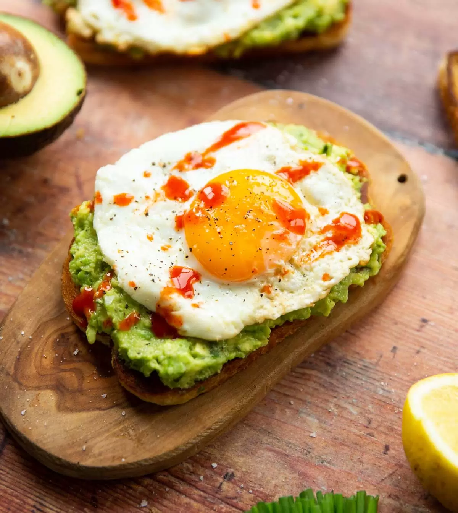

Avocado Toast

Quick and easy Avocado Toast with Egg It’s a simple healthy protein-packed breakfast, snack or light meal! Simple to make, tasty and satisfying. If you haven’t had an egg and avocado toast breakfast yet, now is the time!
Ingredients
- avocado
- bread
- seasonings
- additions: Depending how you choose to cook your eggs, you may need a little butter to add flavor or some vinegar to poach your eggs.
Steps
- Toast the bread
- Fry egg
- Mash the avocados in a bowl with salt and pepper
- Spread the avocado and put the egg on top